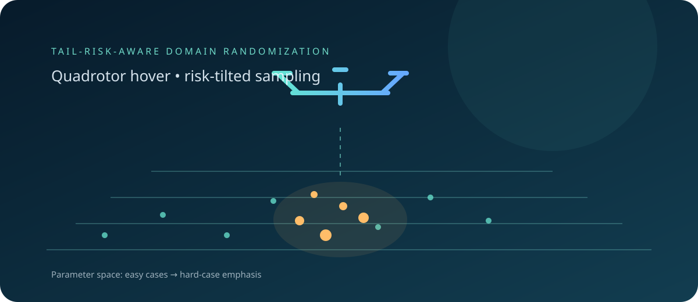

Entropic reweighting
Form a sampling distribution from per-parameter-point returns so hard cases receive more weight.
A compact quadrotor-hover demonstration of entropic risk reweighting: evaluate across randomized dynamics, then emphasize lower-return regions during the next training round.
Quick startView repository
Form a sampling distribution from per-parameter-point returns so hard cases receive more weight.
Genesis simulates a quadrotor hover task while selected dynamics parameters are randomized.
Run standard uniform domain randomization alongside the iterative method using PPO.
Install CUDA-matched PyTorch, then the listed packages. The training environment requires an NVIDIA GPU.
python run.py iterative --rounds 2 --iters_per_round 5 --num_envs 256 --eval_envs 128 --episodes_per_eval 1See the README for the full default protocol, baseline command, and output behavior.